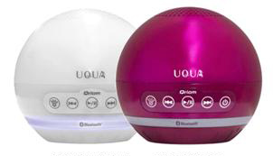
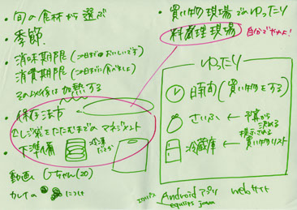

WeeCook 〜食材購入マネージャー〜
買い物時間を減らすことで、「ゆったり」する時間をつくるアプリ
WeeCookは自分の作りたい料理に必要となる食材を人数・日数を設定して計算し提案、また余った食材を利用した料理も提案してくれるアプリである

「ゆったり」をテーマにしたアプリ提案
日用品から共通点を見つけ、一文字の漢字として表現

一般の製品を実際に使用し分析して、存在意義を考える
UQUAを実際に自分が使用することで、自分が何を感じたのかなどの自分の経験からUQUAを分析をした結果、 UQUAには心の変化を促す効果があるのではないかと考えた

「ゆったり」というテーマ
二つの作業からモノの大事な事は「ゆったり」であると決めた
ゆったりとは？
ゆったりに関わりそうな製品の調査

時間を気にせずに過ごす事＝"精神的ゆったり"に着目した
アプリのアイディア
ターゲットユーザー： 一人暮らしの大学生
一人暮らしの大学生にとって食材の買い物時間を減らす事で、ゆったりする時間が作れるのではないかと考えた
担当したもの
自分はロゴマーク制作とアプリの機能アイディアを行った
